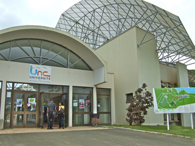

Licence Informatique
La licence mention Informatique offre une formation généraliste couvrant les différentes facettes de la discipline informatique. Elle permet l'acquisition de bases solides tant sur les aspects théoriques que pour les applications pratiques, indispensables aussi bien pour une poursuite d'études en master ou en école d'ingénieurs que pour une insertion professionnelle réussie après la licence. À l'issue du cursus, les étudiantes et les étudiants auront acquis une polyvalence de compétences en développement d'applications, gestion de bases de données, administration de systèmes et réseaux, et seront capables de suivre l'évolution des technologies. La formation est complétée par un projet tutoré, réalisé en binôme sur un semestre, et un stage obligatoire d'une durée minimum de douze semaines, qui apportent une première expérience concrète des enjeux du monde du travail.
Informations clés
- Durée : 5 ou 7 semestres
- ECTS: 180
- Régime d'études : formation initiale ou formation continue
- Lieu campus de Nouville
- Stage obligatoire : 12 semaines minimum

Pour aller plus loin, voici un lien concernant la formation cliquez ici ainsi qu'une vidéo de présentation de la formation